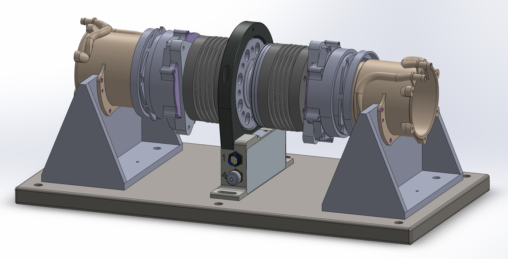
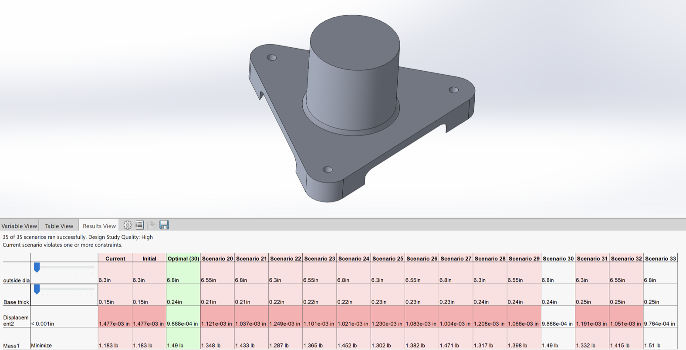
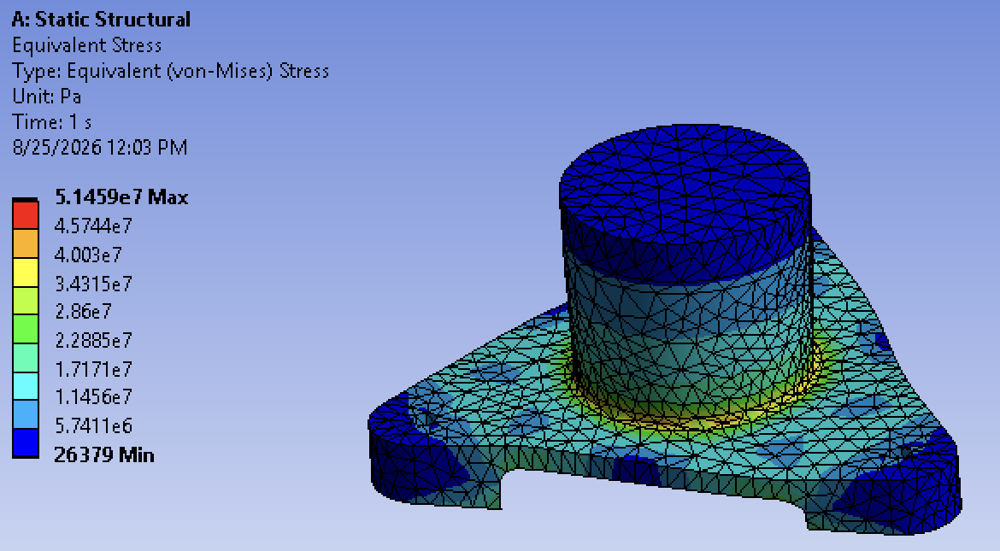
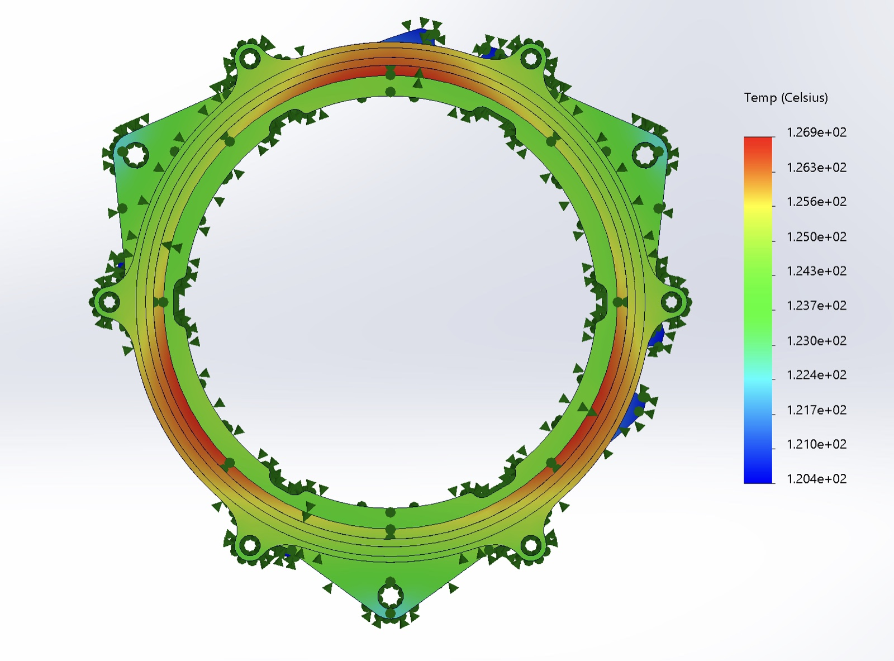
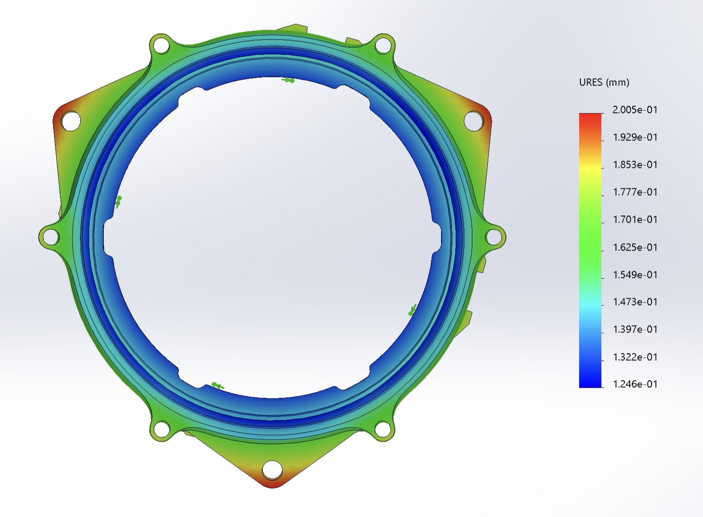

Dynamometer
Two motors. One transducer.

Two in-hub motors facing each other through one torque transducer.

Design study on the steel adapter plate, sweeping outside diameter against base thickness.

The adapter plate at its 500 N·m load case, checked to a 2× safety factor.

The housing at steady state, 120 to 127 °C.

Radial expansion at the outer bolt holes under that temperature gradient.
% --- System equivalent stiffness (series) --- inv_k = (1/k_a1) + (1/k_c1) + (1/k_t) + (1/k_c2) + (1/k_a2); k_sys = 1 / inv_k; % --- System total inertia (sum) --- j_sys = j_a1 + j_c1 + j_t + j_c2 + j_a2; % --- Natural Frequency (Hz) --- fn = (1 / (2*pi)) * sqrt(k_sys / j_sys);
The leading seven of the ranked builds. Each is symmetric, so the adapter and coupling columns stand for a matched pair: adapter · coupling · transducer · coupling · adapter.
| # | Adapter | Coupling | Transducer | k (N·m/rad) | J (kg·m²) | fn (Hz) |
|---|---|---|---|---|---|---|
| 1 | 3 Hole, 0.240, 4140 HT | HBK_MBC_1000 | HBK_T22_500 (0.3) | 104033 | 0.00761 | 588.26 |
| 2 | 6 Hole, 0.350, 6061T6 | RW_BK1_500 | HBK_T110_500 (0.03) | 124897 | 0.01330 | 487.72 |
| 3 | 3 Hole, 0.240, 4140 HT | RW_LP1S_500 | HBK_T22_500 (0.3) | 74599 | 0.00813 | 481.96 |
| 4 | 6 Hole, 0.350, 6061T6 | RW_BK1_500 | HBK_T40B_500 (0.05) | 121960 | 0.01340 | 480.15 |
| 5 | 6 Hole, 0.350, 6061T6 | RW_BK1_500 | HBK_T40Lite_500 (0.08) | 121960 | 0.01340 | 480.15 |
| 6 | 6 Hole, 0.350, 6061T6 | RW_BK1_500 | HBK_T12HP_500 (0.02) | 114824 | 0.01450 | 447.87 |
| 7 | 3 Hole, 0.240, 4140 HT | RW_LP1S_700 | HBK_T22_500 (0.3) | 95079 | 0.01213 | 445.50 |
Driveline builds ranked by first natural frequency.